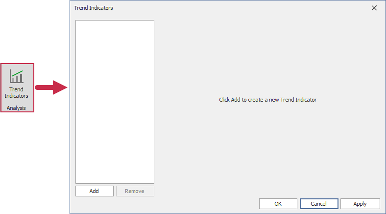
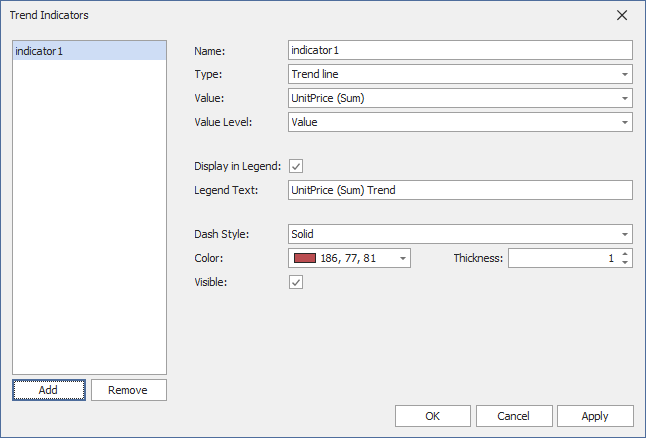
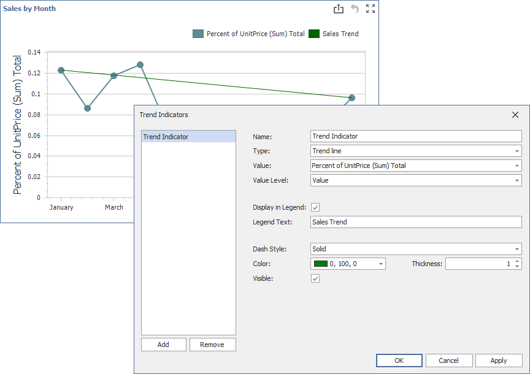

The Dashboard Designer allows you to display trend indicators in Chart dashboard items.
The following indicator types are available:
Trend Line
Displays the general direction of associated points. It is often used to identify existing data trends and can help forecast future trends.
Regression Line
Visualizes data using a mathematical formula that minimizes the distance between the line itself and associated data points. It is used to model the relationship between two variables and can be used to make predictions about one variable based on the value of another.
Custom Indicator
A custom indicator type registered in a dashboard.
Create a Trend Indicator
Click the Trend Indicators button in the Analysis group of the Data Ribbon page. This command invokes the Trend Indicators dialog:

The dialog contains the following buttons:
Add
Creates a new indicator.
Remove
Removes the selected indicator.
OK
Saves changes and closes the dialog.
Apply
Saves changes and keeps the dialog open.
Cancel
Closes the dialog and discards unsaved changes.
New indicators are generated with default settings:

You can change the following settings before displaying an indicator in a Chart dashboard item.
Name
The name of the trend indicator within the indicators collection.
Type
The indicator type: Trend Line, Regression Line, or any registered Custom Type.
Value
The measure data item that is used to calculate the trend indicator.
Value Level
The value that specifies which series point value should be used to calculate the indicator.
Display In Legend
Specifies whether to display the trend indicator in the legend.
Legend Text
The text that identifies the trend indicator within the legend.
Dash Style
The dash style used to paint the line.
Thickness
The thickness of the indicator line.
Color
The color for the trend indicator.
Visible
Specifies whether to display the trend indicator.
You can edit the created indicator in the Trend Indicators dialog:
